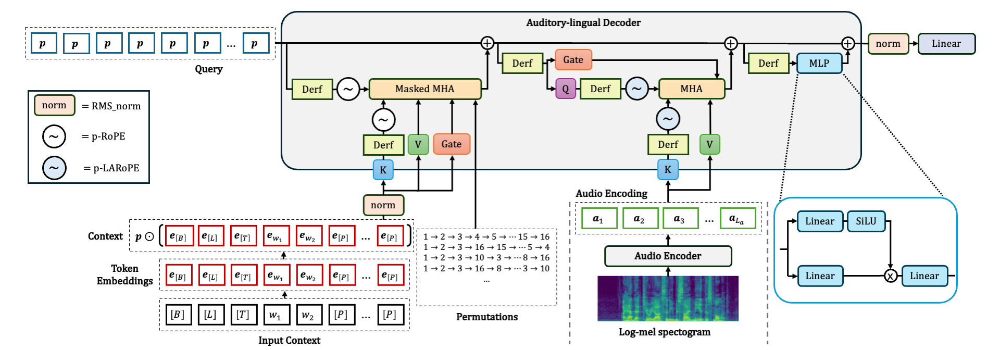
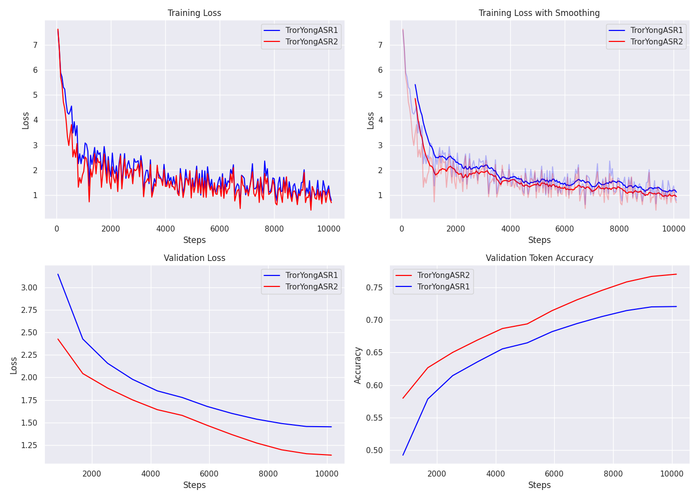

![]()
flowchart LR classDef alert fill:#cb4b4f,stroke:#000,color:#fff; classDef success fill:#009245,stroke:#000,color:#fff; classDef warn fill:#FFEB3B,stroke:#000,color:#fff; A[Begin of sequence]:::success --> B[Language] A[Begin of sequence]:::success --> C[No speech] A ~~~ C B --> D[Transcribe] B --> E[Translate] D --> F[Text] E --> F[Text] C --> G[End of sequence]:::alert F --> G[End of sequence]:::alert
TrorYongASR2: Permuted Language Modeling with Monotonic Alignment, Gated Attention, and Normalization-free Design
Science
Automatic Speech Recognition
Lightweight Permuted Language Modeling for Automatic Speech Recognition.
Abstract
TrorYongASR1 is an Automatic Speech Recognition (ASR) model based on Permuted Language Modeling. Compared to Whisper, it has smaller number of parameters and performs equally nice for Khmer and English. In pursuit of performance and inference time improvement, I present TrorYongASR2, following the lines of TrorYongASR1, but with 4 key modifications: First, it uses Length-Aware Rotary Position Embedding (LARoPE) in the cross-attention layer of its auditory-lingual decoder to better align audio frames and text tokens. Furthermore, to better capture semantic information, the lowest frequencies in rotary position embeddings are removed. In addition, a gated mechanism is implemented in the decoder’s attention layers which allows text tokens to adjust the contribution from attention mechanism to the residual stream. Finally, to save computes, normalization-free design is incorporated in the auditory-lingual decoder. TrorYongASR2 is trained for transcription and translation tasks. It can also detect whether the audio contains speech or not, and identify the spoken language. The current version supports English and Khmer. Its small configuration achieves WER of 10.12% on test split of librispeech_asr (English transcription) and WER of 36.70% on Khmer test split of google/fleurs (Khmer transcription).
Model Architecture
TrorYongASR2, an update to TrorYongASR1 (Khun 2026), augments the auditory-lingual decoder to 1) improve speech-text alignment, 2) enhance the expressivity of rotary position embedding, 3) ameliorate the expressivity of multi-head attention, and 4) speed up training and inference times. For speech-text alignment, Length-Aware RoPE (LARoPE) (Kim et al. 2026) is implemented in the cross-attention to enhance monotonic structure alignment. In addition, the lowest frequencies of RoPE in the context-position attention and LARoPE in speech-text alignment are removed to create robust semantic channels (Barbero et al. 2024). To improve multi-head attention, a gating mechanism is integrated in the self-attention and the cross-attention layers of the auditory-lingual decoder: apply a head-specific sigmoid gate after the scaled dot-product attention. This introduces non-linearity upon the low-rank mapping in the softmax attention which mitigates ‘massive activation’ and ‘attention sink’ (Qiu et al. 2026). Finally, the auditory-lingual decoder adopts point-wise dynamic rescaled Gaussian cumulative distribution function (Derf) (Chen et al. 2026) in place of normalization layers to save compute, hence accelerating training speed and inference process. Figure 1 provides an overview of the TrorYongASR2 architecture.

Length-Aware Rotary Position Embedding
Length-Aware Rotary Position Embedding (LARoPE), a modification to RoPE, calculates relative distances between query and key vectors using length-normalized indices instead of absolute positional indices (Kim et al. 2026). This extension induces diagonal bias in the attention score maps to better align the query vector from one source to the key vector from another source. LARoPE helps improve text-speech alignment in Text-To-Speech models (Kim et al. 2026).
With permuted sequence modeling design, speech-text alignment in the cross-attention layer is crucial to TrorYongASR. Leveraging LARoPE, TrorYongASR2 achieves significant performance improvement (see Figure 3). In addition, to enhance the expressivity of LARoPE as well as RoPE, the lowest frequency portion of the rotation are replaced by zero frequency (i.e., no rotation). This is a hybrid NoPE-RoPE architecture proposed by (Barbero et al. 2024). It enables channels without rotation to better carry semantic information.
LARoPE requires the knowledge of audio length and text sequence length. As the text sequence length is unknown during inference, a length predictor module is designed to predict the sequence length given the audio.
Length Predictor
To make TrorYongASR2 as lightweight as possible, length predictor infers the length of text sequence conditioned directly on the audio encoding. TrorYongASR2 limits the output text to \(448\) tokens. Therefore, length predictor’s head is a linear layer with a softcap as the following:
\[ \mathrm{logits}\leftarrow 224 \times \mathrm{tanh} \left( \frac{\mathrm{logits}}{224} \right). \] So, the output of length predictor stays between \( -224 \) and \( 224 \). Since the target output space is \(\{0, \dots, 448\}\), the length prediction is shifted by \( +224 \) and mean-squared-error loss can be used to train the length predictor. Note that no gradient should flow from this length loss to the audio encoder of TrorYongASR2 because the only role of audio encoder is to capture meaningful features of the input audio for the auditory-lingual decoder.
Gated Attention Layers
Auditory-lingual decoder of TrorYongASR is just a single Transformer. So, the expressivity of the attention mechanisms in this block plays a vital role in improving the model performance. TrorYongASR2 augments the attention layers of this block with an input-dependent head-specific output gate. This gate allows the input to modulate the scaled dot-product attention and thus mitigate the ‘attention sink’ (Qiu et al. 2026).
Concretely, for hidden state \({\boldsymbol{h}}\), attention layers have additional parameter \( W^g \) such that the gate score for head \( i \) is given by \(\mathrm{Sigmoid}(W^g_i{\boldsymbol{h}})\). Let \(\mathrm{head}_i=\mathrm{Attention}({\boldsymbol{h}}, W^q_i, W^k_i, W^v_i)\) be the scaled dot-product attention of head \( i \). The gated output of the multi-head attention is given by \[ {\boldsymbol{o}}=W^o\mathrm{Concat}\bigg[\mathrm{Sigmoid}(W^g_1{\boldsymbol{h}})\mathrm{head}_1, \dots, \mathrm{Sigmoid}(W^g_H{\boldsymbol{h}})\mathrm{head}_H\bigg] \] where \( H \) is the number of heads in the attention layer. Hence, the hidden state \({\boldsymbol{h}}\) can shut down or streamline the scaled dot-product attention from specific head into the residual stream. This makes the attention layers more expressive.
With the custom design of TrorYongASR, the head-specific score in self-attention layer is derived from context vector, not the target token position embedding (see Figure 1). For cross-attention layer, the gate score is generated from the hidden state that derives the query vector for speech-text alignment.
Normalization-free Transformer
While normalization layers are crucial to the Transformer, they require a significant amount of compute compared to point-wise activation function. This induces longer training time and slower inference speed. (Chen et al. 2026) illustrates that dynamic rescaled Gaussian cumulative distribution function (abbreviated to Derf) can be used to replace normalization layers without hurting the performance. In fact, their analysis suggests performance gains compared to LayerNorm and RMSNorm across a wide range of domains, including visual recognition and generation, speech representation, and DNA sequence modeling. TrorYongASR2, thus, embraces this activation function in its auditory-lingual decoder and witnesses the gains in decoding performance and inference speed. However, TrorYongASR2 still maintains normalization layers over input representation (context vector, and audio encoding) and over the pre-logit hidden state (see Figure 1), as training otherwise became unstable.
Additional Model’s Capabilities
Audio with arbitrary length
TrorYongASR2 is trained with audio of arbitrary length. This aims at minimizing compute due to pad frames. Concretely, rather than padding each audio to 30-second length, audios are padded batch by batch to the longest length in the batch (the maximum length is still limited to 30-second long).
So, TrorYongASR2 works directly with audios of arbitrary length during inference and the inference speed becomes faster than the previous version.
Voice-Activity Detection
Another feature of speech-to-text model is to detect whether there is speech in the audio or not. A well-performed model in such detection task reduces its hallucination in both transcription and translation tasks. For this feature, nonspeech7k is used in training TrorYongASR2.
TrorYongASR2 follows the multi-task training format of Whisper but without timestamps: For any audio, the token sequence starts with begin-of-sequence token and ends with end-of-sequence token. If the audio contains no speech, the first token is followed by no-speech token. Otherwise, the second and third tokens define the spoken language and the task respectively. Follow the third token are text tokens (see Figure 2).
nospeech token and \( [E] \), end-of-sequence token. For other audios, the second token, \( [L] \), represents the language of speech (either km for Khmer or en for English). The third token is the task token \( [T] \) that conditions the distribution of the following text tokens: for English audio, transcribe token favors English text tokens, and translate token favors Khmer text tokens. For Khmer audio, it is the reverse.
Translation
TrorYongASR2 is trained with larger translation dataset. Concretely, there are around \( 142 \) hours of Khmer audio with English text and around \( 67 \) hours of English audio with Khmer text. This allows TrorYongASR2 to perform better for translation task.
Training
TrorYongASR2 is trained on 5 datasets:
- 234 hours of
Digital-Divide-Data/khmer-speech-dataset(the whole dataset contains 727.94 hours) for Khmer audio and Khmer text (transcription) train.360split ofopenslr/librispeech_asrfor English audio and English text (transcription)KrorngAI/DDD-Cambodia-khmer-speech-dataset-parquet-000-159-en-translatefor Khmer audio and English text (translation)KrorngAI/openslr-librispeech_asr-clean100-00000-19999-km-translatefor English audio and Khmer text (translation)nospeech7kfor no speech audio (voice activity detection)
So, there are around 804 hours of audio in the training dataset.
TrorYongASR2 has 2 configurations as the following
| Model Size | Tiny | Small |
|---|---|---|
| Audio Encoder | 4 layers, 6 heads | 12 layers, 12 heads |
| Audio Context | 1500 | 1500 |
| Auditory-lingual Decoder | 1 layer, 12 heads | 1 layer, 24 heads |
| Text Context | 448 | 448 |
| Embedding Dimension | 384 | 768 |
| Parameters | 29M | 136M |
The audio array is processed to log-mel spectrogram with 80 mel bins (the same as Whisper models of the same size). These configurations are the same as the ones of TrorYongASR1.
To underline the gain from architectural improvement, TrorYongASR1 is retrained on the same 5 datasets above using the same set of hyperparameters used by TrorYongASR2. Figure 3 shows the training history of tiny configuration. TrorYongASR2 has smaller training and validation losses, and higher validation token accuracy. This shows the effectiveness of the new architectural design in TrorYongASR2. The refinement also manifests in the evaluation below.

Evaluation
Dataset
The evaluation assesses transcription capability on two datasets: 1) google/fleurs for Khmer and 2) openslr/librispeech_asr for English. All results are from the test split of each dataset.
| Dataset | Language | Testing samples | Description |
|---|---|---|---|
| google/fleurs | Khmer | 765 | Multi-lingual dataset with Khmer language samples |
| librispeech_asr.clean | English | 2611 | Clean speech dataset for English transcription |
Audio longer than 30 seconds are excluded from the evaluation (that is why google/fleurs has 765 samples instead of 771 and librispeech_asr.clean has 2611 instead of 2620).
Metrics
For transcription task, 3 metrics below are used
- Token Error Rate (TER): Proportion of incorrectly predicted tokens
- Character Error Rate (CER): Proportion of characters that are incorrect
- Word Error Rate (WER): Proportion of words that are incorrect
TER measures model’s capability in predicting the next token given the audio input and the current sequence of tokens. This metric is weaker than WER and CER because it doesn’t account for insertions, deletions, substitutions, and autoregression as comprehensively.
Results
| Model | Metric | Khmer (fleurs) |
English (librispeech.clean) |
|---|---|---|---|
| Tiny | WER | 57.07% | 20.35% |
| CER | 43.95% | 12.42% | |
| TER | 49% | 11% | |
| Small | WER | 36.70% | 10.12% |
| CER | 29.26% | 6.05% | |
| TER | 38% | 5% |
Both configurations performance well on English language. However, Khmer language remains a challenge.
Note: To compute CER and WER, whitespaces are added between words in Khmer text (Khmer text does not have word boundaries like English text). To do so, khmercut PyPI package is used to tokenize Khmer text into words, and then the words are joined back together with whitespaces. It is due to no-boundary Khmer words that Token Error Rate is utilized as one of the metrics.
Comparison with TrorYongASR1 and Whisper:
| Size | Model | Parameters | Khmer (fleurs) |
English (librispeech.clean) |
|---|---|---|---|---|
| Tiny | TrorYongASR2 | 29M | 57.07% | 20.35% |
| TrorYongASR1 | 29M | 75.88% | 54.33% | |
| Whisper | 39M | 100.6% | 7.6% | |
| Small | TrorYongASR2 | 136M | 36.70% | 10.12% |
| TrorYongASR1 | 135M | 50.46% | 21.75% | |
| Whisper | 244M | 104.4% | 3.4% |
Key Observations:
- As mentioned above, TrorYongASR2 clearly outperforms TrorYongASR1 and requires just a small increase in the number of parameters (the increase comes from additional length predictor and gate projection layers)
- Whisper has most parameters for comparable configuration (39M vs 29M for
tiny, and 244M vs 136M forsmall) - Whisper shows significantly lower word error rates on English (7.6% for
tiny, 3.4% forsmall) - TrorYongASR2 performs best on Khmer dataset (57.07% for
tiny, and 36.70% forsmall)
Note: WER data of Whisper is taken directly from their paper.
Note on Translation Task: According to KrorngAI, the 2 translation datasets above are built using the API of TranslateKH which, in turn, uses an AI model for the translation (Khmer to English and vice-versa). Without any means to check the correctness of the translation over 209 hours of audio, TrorYongASR2 is not evaluated on any translation datasets. It can be assumed that the translation performance of TrorYongASR2 is upper bounded by the AI model used in the backend of TranslateKH.
Downstream Tasks and Limitations
TrorYongASR2 can be integrated into:
- IoT devices: Smart speakers, voice assistants
- Mobile application: Android/iOS apps with speech recognition
- Larger ASR systems: As a component in multi-language ASR pipelines
However, TrorYongASR2 does not have built-in support for timestamps prediction. It might be possible to develop this feature around built-in voice-activity detection.
References
Barbero, Federico, Alex Vitvitskyi, Christos Perivolaropoulos, Razvan Pascanu, and Petar Veličković. 2024. “Round and Round We Go! What Makes Rotary Positional Encodings Useful?” arXiv Preprint arXiv:2410.06205.
Chen, Mingzhi, Taiming Lu, Jiachen Zhu, Mingjie Sun, and Zhuang Liu. 2026. “Stronger Normalization-Free Transformers.” In Proceedings of the IEEE/CVF Conference on Computer Vision and Pattern Recognition, 27418–28.
Khun, Kimang. 2026. “TrorYongASR: Permuted AutoRegressive Sequence Modeling for Automatic Speech Recognition.” May 7, 2026. https://kimang18.github.io/krorngai-blog/TrorYongASR/.
Kim, Hyeongju, Juheon Lee, Jinhyeok Yang, and Jacob Morton. 2026. “Length-Aware Rotary Position Embedding for Text-Speech Alignment.” In ICASSP 2026-2026 IEEE International Conference on Acoustics, Speech and Signal Processing (ICASSP), 18607–11. IEEE.
Qiu, Zihan, Zekun Wang, Bo Zheng, Zeyu Huang, Kaiyue Wen, Songlin Yang, Rui Men, et al. 2026. “Gated Attention for Large Language Models: Non-Linearity, Sparsity, and Attention-Sink-Free.” Advances in Neural Information Processing Systems 38: 100092–118.
Vaswani, Ashish, Noam Shazeer, Niki Parmar, Jakob Uszkoreit, Llion Jones, Aidan N Gomez, Łukasz Kaiser, and Illia Polosukhin. 2017. “Attention Is All You Need.” Advances in Neural Information Processing Systems 30.
Citation
BibTeX citation:
@online{khun2027,
author = {Khun, Kimang},
title = {TrorYongASR2: {Permuted} {Language} {Modeling} with
{Monotonic} {Alignment,} {Gated} {Attention,} and
{Normalization-free} {Design}},
date = {2027-12-08},
url = {https://kimang18.github.io/krorngai-blog/TrorYongASR2/},
langid = {en}
}
For attribution, please cite this work as:
Khun, Kimang. 2027. “TrorYongASR2: Permuted Language Modeling with
Monotonic Alignment, Gated Attention, and Normalization-Free
Design.” December 8, 2027. https://kimang18.github.io/krorngai-blog/TrorYongASR2/.